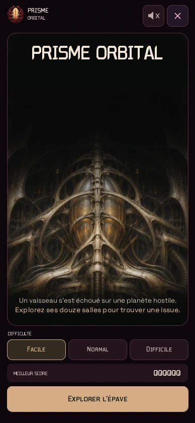
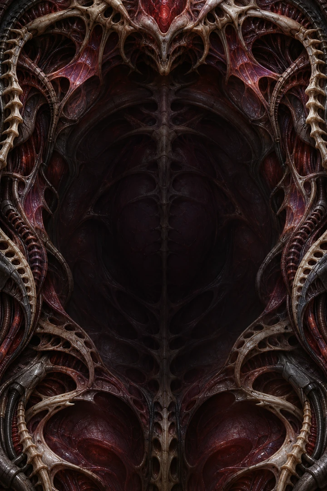

Il metallo è vivo.
Un classico rompimattoni tra condotti organici, membrane e sale biomeccaniche. Ogni sala ha una struttura e un'atmosfera proprie.




Ogni bonus può cambiare la partita.
Controlla la racchetta con il pollice. Fai schiudere le uova, distruggi gli ostacoli, raccogli mutazioni utili e fai attenzione ai malus.


Laser organico
Carica progressiva, colpi automatici e attivazione temporanea. I bonus successivi accelerano la ricarica.
Plasma e mutazioni
Scudo cumulabile su tre livelli, colla, movimento libero, uova multiple o più grandi. Raccogli le rare vite extra.
Malus
Comandi invertiti, racchetta ridotta, ritorno a un solo uovo o annullamento degli effetti.
Atmosfera sonora
Musica cupa ed effetti sonori organici. Puoi disattivare il suono in qualsiasi momento.
Scopri le sale e i bonus, con aiuti e la possibilità di continuare.
La vera sfida arcade: nessun continue dopo la sconfitta.
Più impegnativo e veloce, senza vite extra né continue.
Sali a bordo.
Scarica Prisme Orbital per Android gratuitamente. Non serve un account GitHub.
Scarica Prisme Orbital v1.60Come installo il gioco?
- Scarica l'APK sul tuo telefono Android.
- Apri il file scaricato.
- Se Android lo richiede, consenti l'installazione dall'app che apre il file. Fallo solo se ti fidi della provenienza del file.
- Installa il gioco. Poi puoi revocare l'autorizzazione.
v1.60 — Una nuova sfida
La campagna è stata arricchita, con traiettorie e bonus migliorati. Il punteggio tiene conto della difficoltà per tutta la partita. Scopri cosa ti attende alla fine della nave.